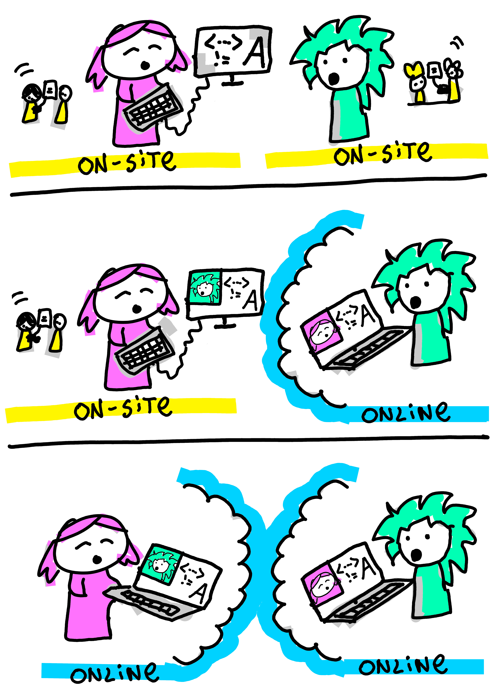
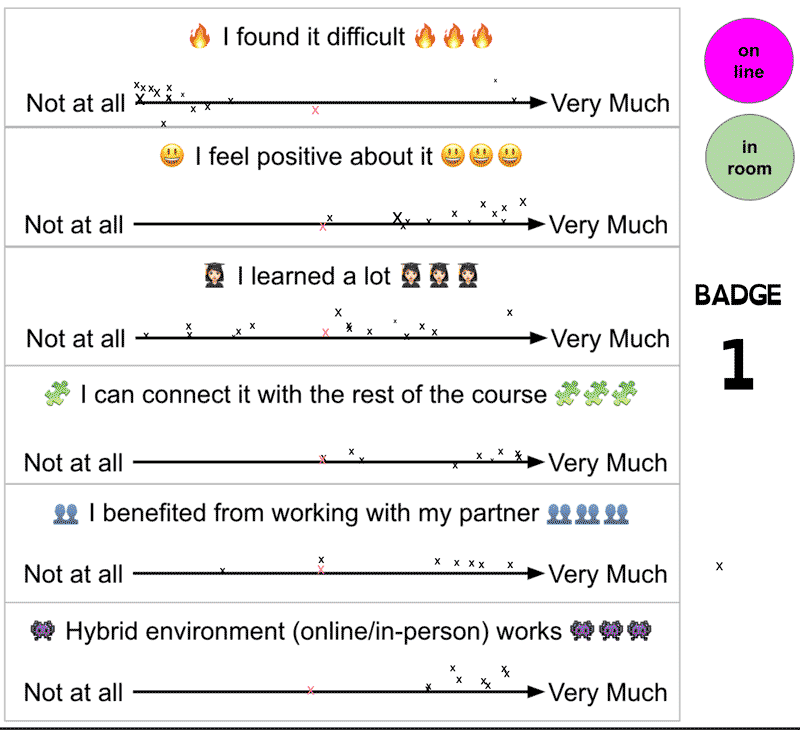
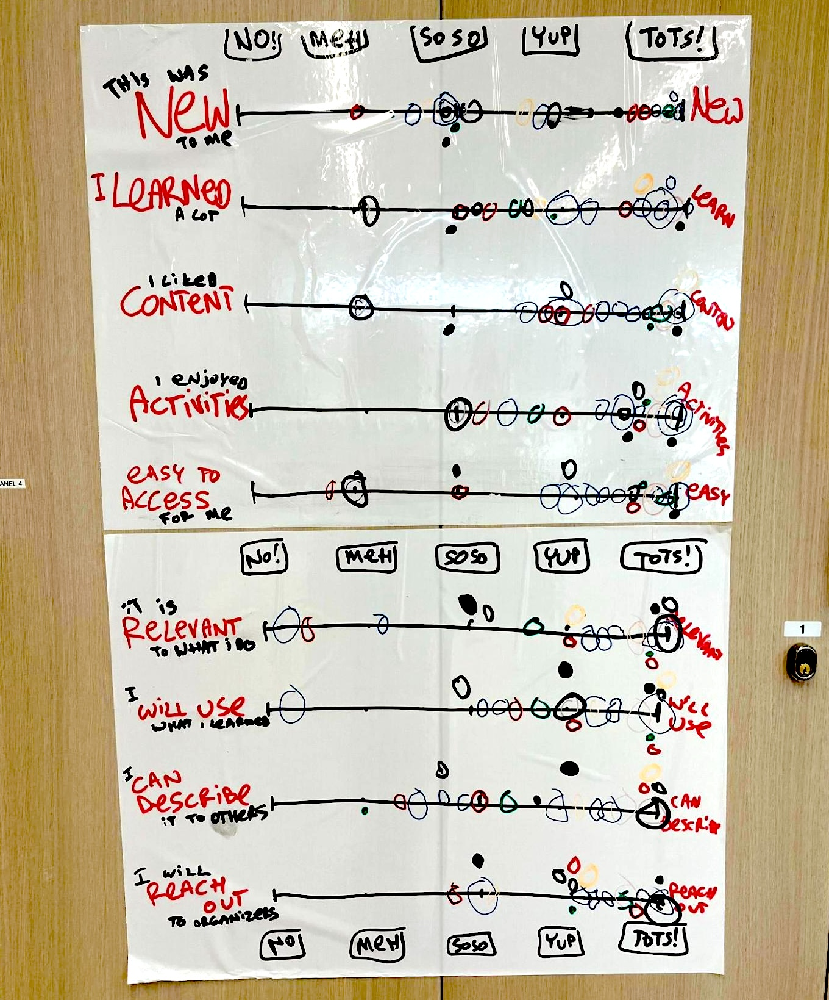
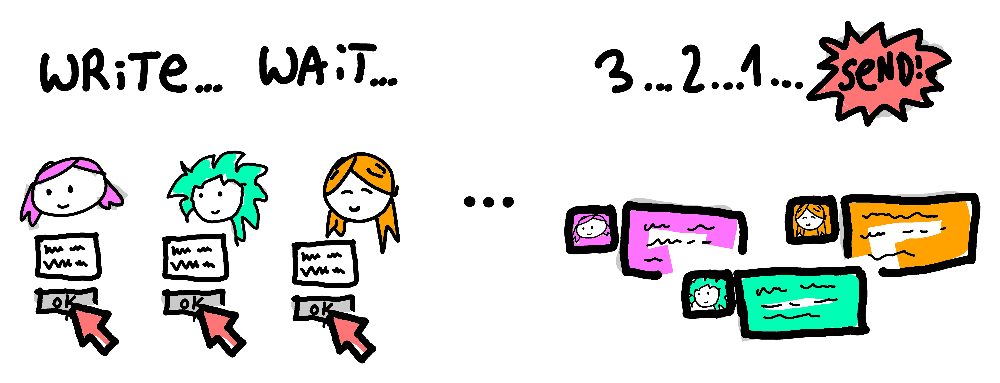

Learning Together Across Modes: Online and On-site Pair Programming in a Fusion Course
course innovation, pair programming, teaching programming, text mining, stories
Introduction
“Sarah, can you scroll down a bit?” The voice appeared suddenly in Sophie’s headphones, causing her to jump slightly in her chair. Just moments before, she’d been chatting face-to-face with Dr Llewellyn about Python syntax errors. Now her disembodied voice was helping her online partner navigate their shared code, while she remained physically present in the classroom just three feet away. Welcome to fusion teaching, where instructors become friendly ghosts and the boundaries between digital and physical learning dissolve in unexpectedly delightful ways.
In this chapter, we want to share our experience of developing and teaching an experimental and innovative pair programming course. This course is non-traditional; we teach text mining to master’s level students in fusion mode (both online and on-site students at the same time) in a two-day intensive session. We knew this would be challenging, but we also knew that this would be a great learning experience and a chance to do things differently. We present here an honest reflection of the trials, tribulations, and wins in what was ultimately a rewarding and satisfying experience. We didn’t do everything perfectly, but we learned a lot, and we believe the students did too. Please read on and hopefully enjoy hearing about our experience.
Pair programming (Orzechowski, Blankinship, and Banas 2026; Desvages et al. 2026) is central to our course, but pairing students effectively in a fusion setting presents its challenges. It was important to us for our entire cohort to feel a sense of parity; this could not be an in-person course with people watching online. We wanted to develop fluidity between the modes. We worked hard at this and broke down the barrier between the room and online. We created a classroom in which both teachers and students can be vulnerable and open, so that we can grow from each other’s mistakes, and communicate with respect.
When we first designed and ran Text Mining for Social Research1, the Edinburgh Futures Institute’s first fusion course at the University of Edinburgh, we knew we were stepping into uncharted territory (Alex et al. 2021). Fusion courses integrate both in-person and online students, requiring thoughtful interaction strategies to create a cohesive learning experience. While hybrid teaching models have been explored extensively (Beatty 2019; Raes et al. 2020) and so has the value of peer instruction (Porter et al. 2011), our fusion approach to intensive pair programming represents a novel application of these principles to collaborative coding education. With a team of four (three lecturers and one teaching assistant), we had the flexibility to experiment with innovative teaching strategies that bridged the gap between online and on-site students. This chapter presents our experiences and lessons learned when experimenting with three key interaction methods: Negotiating Fusion-Pairs, the Ghost Helper Effect and Micro-interactions.
Making Fusion Pairs Work
A reflection on what needs to be considered when pair programming in a fusion classroom
Pair programming is central to our course (Williams et al. 2000; Hannay et al. 2009; Hanks et al. 2011), but pairing students effectively in a fusion setting presented its challenges. We experimented with assigning students in same-mode pairs (on-site-on-site or online-online) and mixed-mode pairs (on-site-online), adjusting pairs every hour to help students feel part of a single, integrated cohort. Each new pairing required students to renegotiate key aspects of their collaboration: how they worked together, who took the lead, and how they interacted with instructors. This constant reshuffling reinforced the sense of a shared learning experience across both modes.

We encountered several challenges in this type of paired learning approach (audio issues, cognitive load, context switching). This could especially affect students when accessibility issues or other special circumstances are compounded or clash with the learning environment.
While students generally preferred mixed-mode pairs (see Figure 2) and reported feeling more connected to the broader cohort, this arrangement proved exhausting to both online and on-site participants. The background noise in the classroom, combined with the additional cognitive load students experienced as a result of this noise, can leave them feeling drained by the end of a session.

The size and acoustics of the classroom are key factors to consider when using pair programming in teaching. Background noise not only causes “Zoom fatigue” for online students (Bailenson 2021), especially in longer events like ours, but also affects the on-site students who wear headphones to connect to their mixed-mode buddy. Such overload issues disproportionately affect neurodiverse learners who may struggle with auditory processing or filtering competing stimuli. In our case, additional room facilities or even a quiet area outside of the classroom proved handy for such interactions. As a teaching team, we hadn’t originally anticipated this need. We are known to improvise and have once used a “broom cupboard” as an overflow space to support mixed-mode pairs.
Unlike typical online interactions, where participants can selectively mute themselves, paired programming also demands constant verbal communication as students alternate between navigator and driver roles throughout exercises. This requirement for continuous dialogue means that small audio cues (“aha,” “umm”) become important elements that would make the experience worse if they were missing. The downside of not muting ourselves is that background noises cannot be avoided.
As teachers, we had to learn what the experience of an online participant is. When joining students online, we noticed how important the camera angles are. Online students like to see teachers close up but also what’s happening in the classroom. When teaching hearing-impaired students online, they like to see the face of the lecturer close up for lip reading. When looking at code on a screen, the font size needs to be sufficiently big, and it is important to scroll in a controlled way, as otherwise it becomes difficult for the partner to follow. Often, the first few minutes for each pair’s collaboration were taken up by making all those audio/visual adjustments, and then they were ready to go.
With several mixed-mode pairs in one room, there might also be a feedback loop (which sounds like a high-pitched squeak when a microphone picks up the sound from the speakers). This is something that needs to be managed carefully, and, again, additional physical space will help with that. In an hour-long session, such adjustments can take up another few minutes to sort out.
More broadly related to fusion teaching, addressing and talking to online students explicitly during the introduction of the course and throughout, and not just the ones, is vital to make them feel part of the group, as it is very easy to forget about them otherwise. Having personally participated in hybrid courses that prioritised those in the physical classroom, the online experience can feel isolating. Inertia and gravity pull teachers towards excluding online participants, if there are active efforts and structures to include them. For our text mining course, we rehearsed all possible scenarios of interacting with on-site and online students in the bigger group or in pairs (e.g. how do I interact with a student pair that is mixed-mode, on-site-only or online-only) and really thought carefully about what is important in each situation. We use an advocate for the online students in the room, a person with specific responsibility, who could be another teacher, a teaching assistant, or a student, to draw attention to any comments or raised hands from an online student that the teacher may have missed. This has the dual effect of including the online students in that moment but also reminding the teacher to check in the future. Making space to ask the online students for their comments is important; they become more active participants, and the students in the room feel like they are part of the cohort.
After several years of practice teaching using pair programming in this and similar courses, we are tending more towards online-only and on-site-only pairs, given that some of the challenges involved (e.g. classroom setup) are out of our control and are not something we can easily adjust during the course. In some ways, this feels like a failure; we really wanted to completely cross that boundary, but if this makes it harder for the students, we must adapt. We found that running the mixed-mode sessions only in the morning, when everyone is fresh, allows us to feel like one group and reduces the likelihood of Zoom fatigue later in the day.
Ghost Helper Effect and the Fluid Divide
A discussion on a fluid divide and not siloing students into two groups
In a traditional classroom, students can simply raise a hand and ask the teacher for help. However, in a fusion course environment, mixed-mode pairs introduced a new dynamic. We quickly learned that if online students needed help, support also had to come online. Otherwise, teachers ended up only communicating with people in the room. To address this, all teaching staff were online during pair programming sessions, creating what we called the “ghost helper effect”. This allowed us to speak to students in both modes simultaneously, whether through direct conversation in the room or via webcams and headsets to ensure an equal experience.
This led to a surprising phenomenon for on-site students in mixed-mode pairs, suddenly hearing a voice in their headphones from one of the teaching team they had just interacted with in person a few minutes earlier, like a friendly ghost. At first, this unexpected presence was disorientating, diverting attention and requiring a cognitive shift (see Figure 3). To normalise the experience, we consciously used online helpers for all mixed-mode pair work. While initially some students were spooked by the fluidity of the “ghost” seeming to be everywhere at once, they quickly found this both friendly and helpful.

In taking this approach, it was important for students to feel a sense of parity in how the course was being delivered and to develop a fluidity between online and on-site. With staff being online and visible through their own cameras, they could speak to both groups directly through the same method. Rather than speaking to an online student through an on-site partner’s webcam or relaying information to be passed on, this ensured that all information was delivered simultaneously and created a sense of fluidity between students and staff.
This was strengthened by staff at times leaving the main classroom and speaking to students in different locations, for example, a smaller classroom. They effectively became ‘online’ as well, working to break down the divide between the two modes, while still communicating with students together. In blurring the boundaries, neither group felt staff were giving preference to one side or the other, and the “ghost helper” approach allowed us to support students seamlessly regardless of location.
For students, this fluidity created a sense of seamlessness between the two media, and while much thought went into facilitating this, for the students, it felt effortless. Some even shifted between modes during the course, starting the day online before coming on-site or the other way around. Allowing this flexibility showed that students felt at ease in either mode and that, while both had specific issues, neither was better than the other. For instance, at one point, electrical issues on-site meant that students in the room were unable to access their workbooks, while those online were unaffected. Therefore, while both modes could present challenges, in creating flexibility between them, students were able to adapt with little disruption.
Micro-interactions
Micro-interactions are how we bring the learning into the wider classroom
When you teach a course in an intensive mode, you are all together for two very busy days. This helps with a feeling of connection and that we are all in this together. It exacerbates feelings of joy but also of frustration. Learning happens in the midst of these feelings, and we know we need to connect the course with those small moments of joy and frustration and allow them to be voiced. We wanted to encourage, celebrate, and capture these moments of learning and cohort camaraderie, and quickly fix mistakes we were making and habits that were annoying.
Below we will explain strategies we employed to make the classroom a place of sharing, exchange and growing together. Feedback was gathered not only for quality control, as with the typical “How did you like the course?” questions, but rather to continuously synchronise with the energy and mood of all the students on the course; we call this ‘relentless feedback’. It has to be quick and fun and not distract the class from the core learning. We gamified these small moments of interaction, with methods for ensuring everyone has an equal and anonymous voice, avoiding some common techniques which can be quite exclusionary, such as when a teacher picks the student who raised their hand first, it is often the same student. We asked students to put crosses on a whiteboard of questions to show where their mood was, and we asked them to fire answers to verbal questions in the chat function of the online room; we call this a ‘Chat Blast’. If a student picked up a mistake in the code, we asked them to circulate it to the room. If they had a good comment or insight during their learning, we asked them to bring it back up in the discussion sessions when we came back together as a whole group after pair programming. We adapted sessions when people were frustrated or tired, we voiced that these feelings were valid and uncomfortable but can be part of learning, and we upped our energy when the energy in the room started to fade. We created a classroom in which both teachers and students can be vulnerable and open, so that we can grow from each other’s mistakes, and communicate with respect (amplification of learning).
1) Relentless Feedback
We wanted to gather feedback as we went to have a quick and real-time reading on how the course is going and to be able to adjust our approach if needed. There is a trade-off between asking feedback on the spot or later: asking during the learning process can be quite disruptive, while if we ask later, students might not take the time to provide the feedback in the first place or might not remember how they felt earlier. This is especially important if we care about granularity and would like to know if, for example, a particular part of the course needs to be improved.
We envisaged a two-way feedback channel, where students say how they are feeling, but they also see how everyone else in the room is doing. We were also aware that anonymity will lead to more honest and useful answers. Another part was that we wanted it to be playful and not very constrained by the digital tool, where the little artefacts like handwriting, colour choice or exact position on the screen can convey personality and individuality.
We needed a quick and unobtrusive way to gather feedback, which meant that we could use it multiple times during the day. We also wanted to ask meaningful questions, which will help us guide the course delivery (not just “Do you like it”) since we were aware of the complex interaction between whether a course is ‘hard’ and ‘useful’ (where ‘hard’ is fine, as long as it is ‘useful’).
We wondered whether we could create a feedback mechanism which is easier to complete than to dismiss/avoid, sort of like ‘accept cookies’ popups on websites make it easier to accept than to customise. So, we created a multiple-slider feedback mechanism, where students grade on a Likert scale multiple aspects of their learning experience, and all results are fully open but anonymous.
For our fusion course, we could not find a tool which would deliver exactly what we needed at the time, so we used a shared digital whiteboard. The whiteboard would always start with several empty scales, and each student would be invited to type the letter X in the appropriate place on the whiteboard (see Figure 4). Since we gathered this feedback every 1-2 hours of the course (after each badge), we had very granular data about the two days of our course. In the animation below, you can see the way the mood in the room changed as the course progressed, which was very useful for us to see and respond to.

For completeness, this technique is not limited only to online or hybrid environments, as we also tried it on in-person bootcamp courses as a means of gathering and sharing feedback in the room (Figure 5).

2) Chat Blast and Other Micro-contributions
Following the same philosophy as in the feedback above, we wanted to give students opportunities to check in with their own learning and the group and provide constructive feedback to the teaching team. Throughout the course, there were moments where we asked them to contribute questions that we would then discuss in the session after each pair programming exercise. This enabled the entire cohort to benefit from the discussion and answers provided. We also ensured that all student questions were repeated aloud during debrief sessions, while also encouraging students to share their own solutions via the chat.
At specific points in the course, we also asked all students to type a quick, micro contribution into the chat all at the same time, i.e. a Chat Blast (see Figure 6), to encourage engagement and shared participation. We took the Three Stars and A Wish approach, which is used by teachers in primary schools to help pupils focus on what is working and what needs improving (Larson, Trees, and Weaver 2008). In our case, we flipped this around and asked students to provide us with “Three stars and a wish” about the course in the chat of the video call. This enabled them to share their thoughts not only on what they liked about the course but also gave them permission to point out things that could be improved or things they struggled with.

Using the Chat Blast method, we exposed the fact that we were learning from the students as well. We were constantly adjusting the course in an agile way according to the feedback received from students when possible. We also exposed the fact that not everything goes right all the time, that we are human beings who can make mistakes and are learning how to adapt to each new group of students in a fusion teaching environment.
A Practical Guide for Fusion Educators
After two intensive days in the trenches of fusion teaching, we emerged with battle-tested insights that we wish we had known before we started. Here are our concrete recommendations for educators considering teaching pair programming in a fusion (or hybrid) setting:
Before You Begin:
- Rehearse every scenario. Practice switching between online and on-site interactions until it becomes second nature. We literally role-played “How do I help a mixed-mode pair when one student is confused?”
- Audio is everything. Invest in quality headsets and microphones for all teaching staff and test for feedback loops before the course begins. Poor audio will sink your fusion dreams faster than any pedagogical mistake.
- Designate an online advocate. Assign one person the specific job of watching for raised hands, chat messages and overlooked online participants. Without this, online students become invisible.
During the Course:
- Start mixed, then adapt. Begin with mixed-mode pairs when energy is highest, but don’t be afraid to switch to same-mode pairs if fatigue sets in. Flexibility is not failure; it is responsive teaching.
- Feedback must be quick and visual. Our slider system took 30 seconds to complete and showed results immediately. Long surveys kill momentum.
- Normalise the weird moments. When your voice appears “ghost-like” in someone’s headphones, acknowledge it with humour. Students need permission to find fusion teaching delightfully strange.
Technical Essentials:
- Font size matters. What looks readable to you will be too small for online partners watching code.
- Avoid unnecessary scrolling. Every rapid scroll or sudden page jump becomes disorienting for online partners trying to follow along. Move deliberately through content.
- Camera angles are crucial. Online students want to see both your face and the classroom; position cameras accordingly.
- Have a backup space ready. Whether it is a smaller room, or yes, even a “broom cupboard,” you’ll need overflow space for mixed-mode pairs.
The hard truth is that some days, same-mode pairs will work better than mixed-mode ones. Accept this not as defeat, but as responsive teaching. The goal is not perfect fusion; it is creating a cohort that learns together, regardless of location.
Our most important lesson? Fusion teaching requires the same vulnerability we ask of our students. When we admitted our mistakes in real-time and adjusted together, that’s when the real learning, for all of us, began.
Conclusions
Fusion teaching challenges traditional classroom dynamics, but with thoughtful design, it can create an engaging and collaborative learning experience. By experimenting with different interaction strategies, we found ways to bridge the physical and digital divide between online and in-person students, creating an interactive and integrated cohort. Our lessons learned and practical insights are timely and valuable for educators designing hybrid courses, particularly in the post-pandemic education landscape.
Fusion teaching challenges traditional classroom dynamics, but with thoughtful design, it can create an engaging and collaborative learning experience. By experimenting with different interaction strategies, we found ways to bridge the physical and digital divide between online and in-person students, enabling effective pair programming partnerships across both modalities. The mixed-mode pairing approach, while challenging to implement in typical classroom environments due to background noise and cognitive load issues, demonstrated the potential for bridging physical and digital collaboration in programming education.
When logistical constraints made mixed-mode pairing difficult to sustain, our experience still provided valuable insights into preparing students for the increasingly common reality of distributed software development teams. Our lessons learned and practical insights are timely and valuable for educators designing hybrid programming courses, particularly in the post-pandemic education landscape, where graduates from various disciplines increasingly need coding and remote collaboration skills in their professional work.
This was a two-day intensive bootcamp course for 30 postgraduate students (15 on-site, 15 online). Each day consisted of four 1.5-hour-long sessions, with each session starting with a 15-minute introduction, an hour of coding in pairs and a 15-minute Q&A session.↩︎